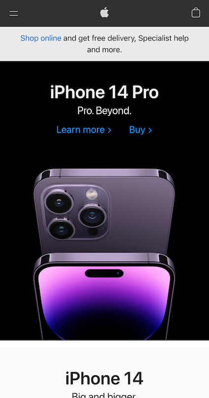

White Space and Clean Design
Apple
https://www.apple.com/hk/en/ White space and clean design gives enough spaces between elements by reducing amount of text and elements that users can see at once. It enhances comprehension and also improve attention drawing. Apple homepage reserves enough spaces between elements and also allows users see appropriate amount of information in one screen.
Hick's Law
Pizza Box
https://m.pizzabox.com.hk/#/advertHick's Law states that a person takes more time to make a decision when more possible choices are availabe to that person. Therefore, a website designer's goal is to make the website options clear and simple, in order to reduce the time that website users take to access the website. Pizza Box homepage helps to achieve this purpose. Instead of listed out the options all at once, the homepage is categorize into four main functions; so that user can navigate easily.
Fitt's Law
FORTRESS
www.fortress.com.hkHick's Law states that the time it takes for a person to move a pointer to a target area related to the size of the target and distance between targets. FORTRESS page keeps the sizes of the icons big and the distance between targets are closed to the thumb's area. Therefore, it is convenient for users to browse through the contents using mobile web browser.